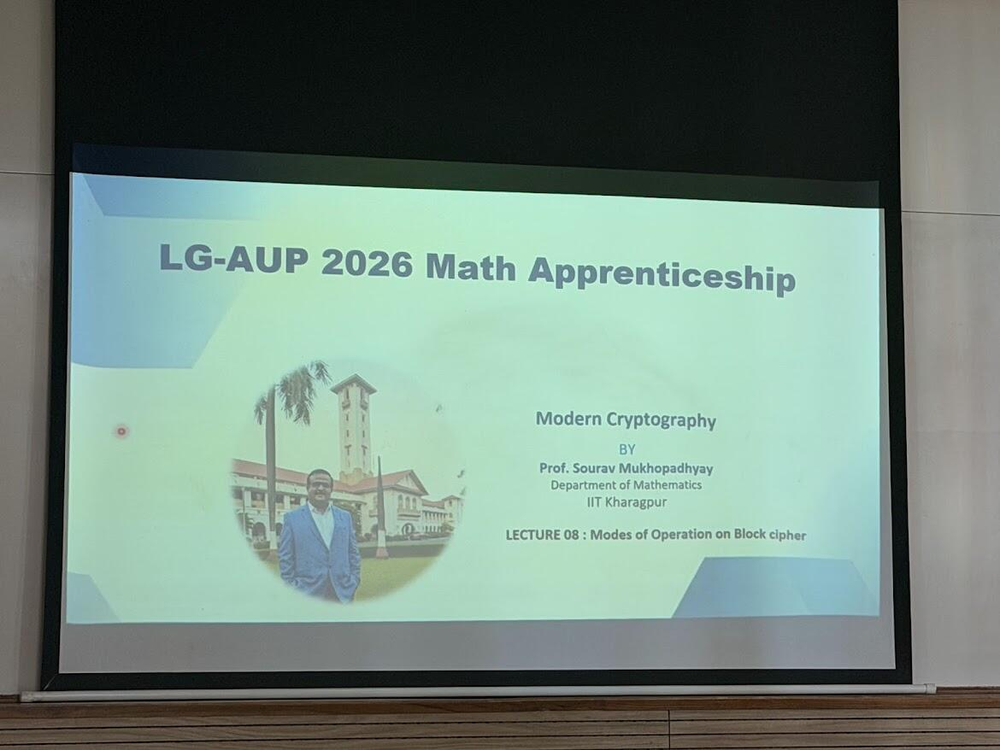
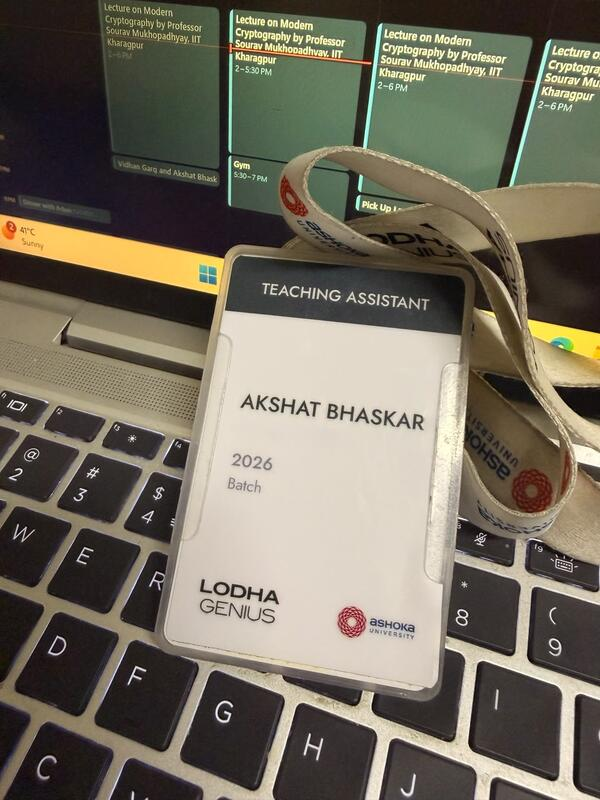
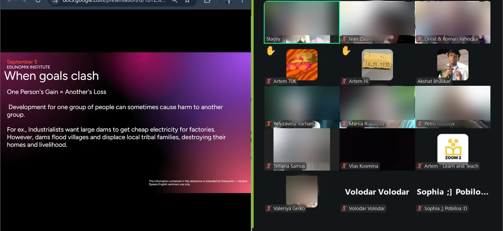
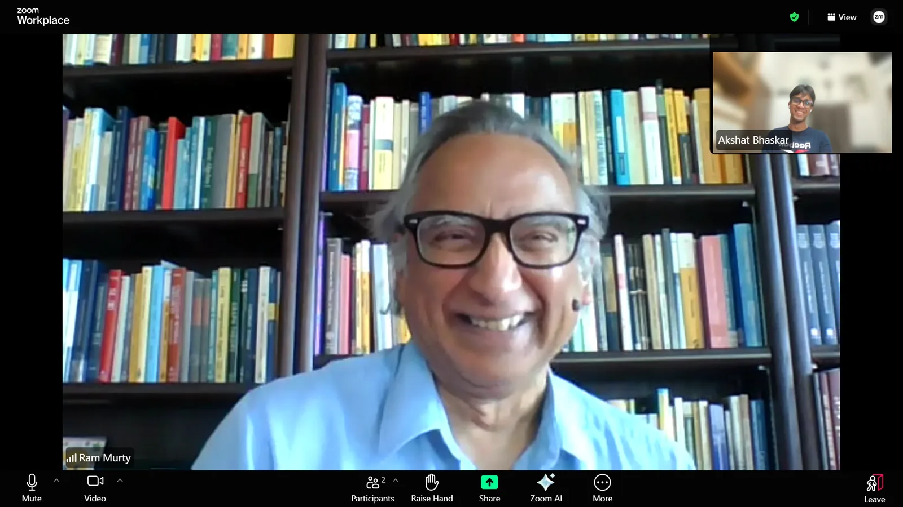
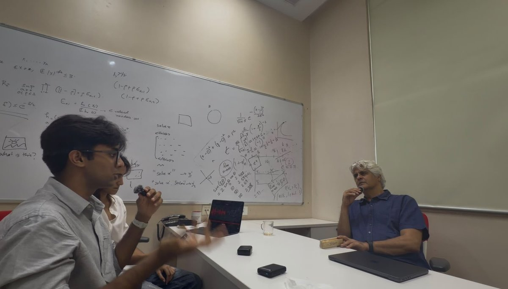
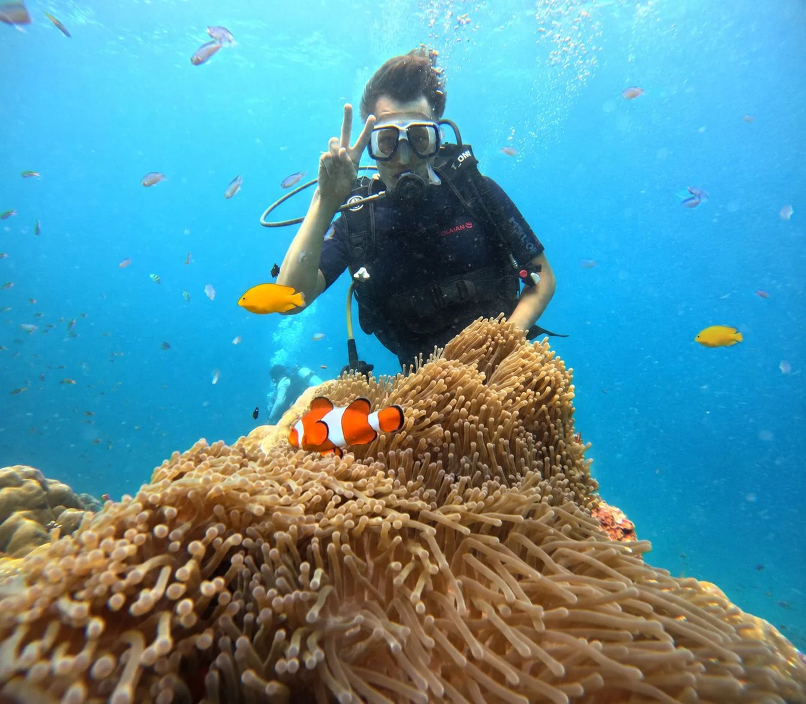

he first half of my gap year went to mathematics. I did a residential mathematics apprenticeship under Professor Shanta Laishram, Head of the Theoretical Statistics and Mathematics Unit (Stat-Math Unit) at the Indian Statistical Institute (ISI), Delhi, working in advanced number theory, hosted at Ashoka University. I received a 10,000 INR research stipend, and all in all, it was one of the most fulfilling summers of my life!
he first half of my gap year went to mathematics. I did a residential mathematics apprenticeship under Professor Shanta Laishram, Head of the Theoretical Statistics and Mathematics Unit (Stat-Math Unit) at the Indian Statistical Institute (ISI), Delhi, working in advanced number theory, hosted at Ashoka University. I received a 10,000 INR research stipend, and all in all, it was one of the most fulfilling summers of my life!

A lecture on modern cryptography, from the mathematics apprenticeship.
I was also a Teaching Assistant to the Lodha Genius Programme 2026, an undergraduate teaching position that the programme made an exception to include me in. Over four weeks, housed at Ashoka University, I worked across four completely different courses: the Mathematics of Investing, Rubik's Cube and Group Theory, Basic but Essential Mechanics, and Origami and Advanced Geometry.

My Teaching Assistant ID card, Lodha Genius Programme.
Then, for the latter part of my gap year, I worked on a completely different question. Throughout my work in financial literacy, I had assumed ignorance was the disease and information the cure. I am still running Edunomix and Decoded, but I had started to see that literacy is only one part of the story.
So once I landed back in Delhi from Ashoka, I began exploring that full time: my research examines the relationship between fear of missing out (FOMO) and the sharing of financial misinformation on Indian social media. Specifically, I am investigating whether individuals who experience higher levels of FOMO are more likely to share misleading financial content, particularly when it creates a sense of urgency or suggests that they might miss an investment opportunity.
The study builds on a framework developed by Professor Hemant Kakkar, Associate Professor of Management at the Indian School of Business (ISB), on the psychological drivers of fake-news sharing. Under his guidance, I adapted the framework to the context of financial misinformation and incorporated the 10-item FOMO scale developed by Przybylski et al. (2013).
Check out the GitHub here! I am still in the middle of this study, and I am moving on to the analysis component of the study :)
I also kept running Edunomix India day to day and launched the second edition of our nationwide essay competition, judged by economics scholars from UC Berkeley, Cornell, and Warwick. We ran the Ukraine Speaks English seminars again this season with Learn and Teach UA, providing free financial education for students across Ukraine.

Fall 2026 Ukraine seminars, our first session.
And I expanded the Decoded team out from just Amaira and me into a broader operation, with more than 20 volunteers across research, social media, and outreach, and worked on a collaboration with HERizon on various events. We interviewed a lot of experts in 2026, breaking down their fields for the general public (see below).
We also launched the Decoded Newsletter, led by our Newsletter Head Anya Beekam, and put together a Newsletter Department, the first issue of which is coming out this month! Stay tuned here.
Upcoming Guests
- Brian Schmidt, 2011 Nobel Prize in Physics
- Peter Hegemann, 2026 Nobel Prize in Physiology or Medicine
- Ashok Kantha, Former Ambassador of India to the People’s Republic of China
- Andrew Oswald, Professor of Economics and Behavioural Science, University of Warwick
- Eduard Talamàs, Professor @ IESE Business School and PhD @ Harvard University
Events
Published Episodes
- M. Ram Murty, FRSC Queen’s Research Chair at Queen’s University

on a call with M. Ram Murty
- Cary Krosinsky, Lecturer at Yale, NYU Stern
- Sandeep Juneja, Professor of Computer Science at Ashoka University, Director of the Safexpress Centre, previously Dean at TIFR, Mumbai

interviewing Professor Sandeep Juneja for the Decoded Podcast
- Sundar Sarukkai, Philosopher, Director of the Manipal Centre for Philosophy and Humanities
among many others!
Away from all of this, I visited the Andaman and Nicobar Islands for 15 days with my family, got to spend a lot more time with my extended family as well, which is hard to do when the rest of the year is this full. A few frames from the islands are on my photography page, check it out!

scuba diving at Havelock Island (getting certified soon!)
I also took part in a lot of competitions, organised quite a few things, and learned a ton along the way, while going deeper into my work in AI. From 30 October to 1 November 2026, I will be at ConfAI 2026 at Plaksha University, where I have been invited to the AI conference in line with my work on AI Policy!
ConfAI 2026, Plaksha University.
On the side, I have been building a few things to pick up the technical skills I would want for economics research at university next year:
- Forge, an AI research lab built at Hack-Nation’s 7th Global AI Hackathon (October 2026)
- Scout, a voice agent that calls vendors and negotiates on verified leverage (August 2026)
- Project Fermat, teaching olympiad mathematics in underserved schools across Delhi NCR (September 2026)
- a Sensitivity Model for Multi-Credit Calibration with two friends (October 2026)
In October I also started learning linear algebra and advanced Python, through YouTube and MIT OpenCourseWare, and started Financial Markets and Introduction to Psychology in Yale Online through Coursera!